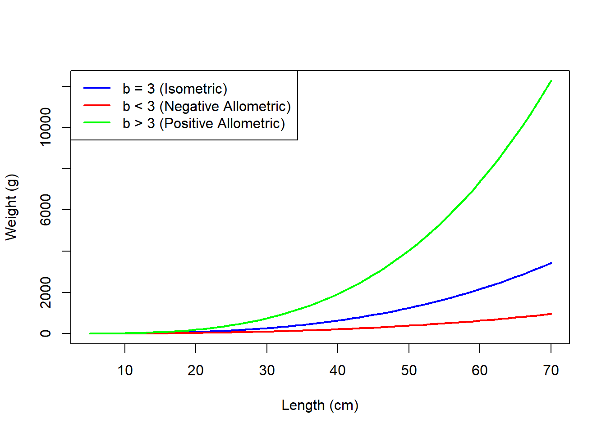
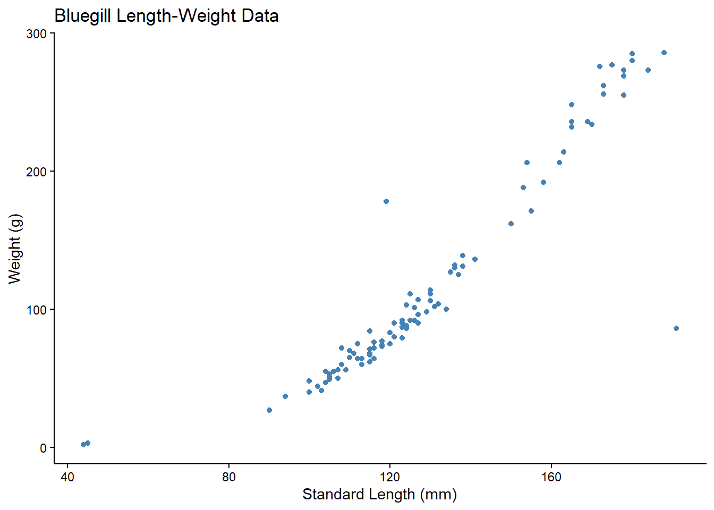
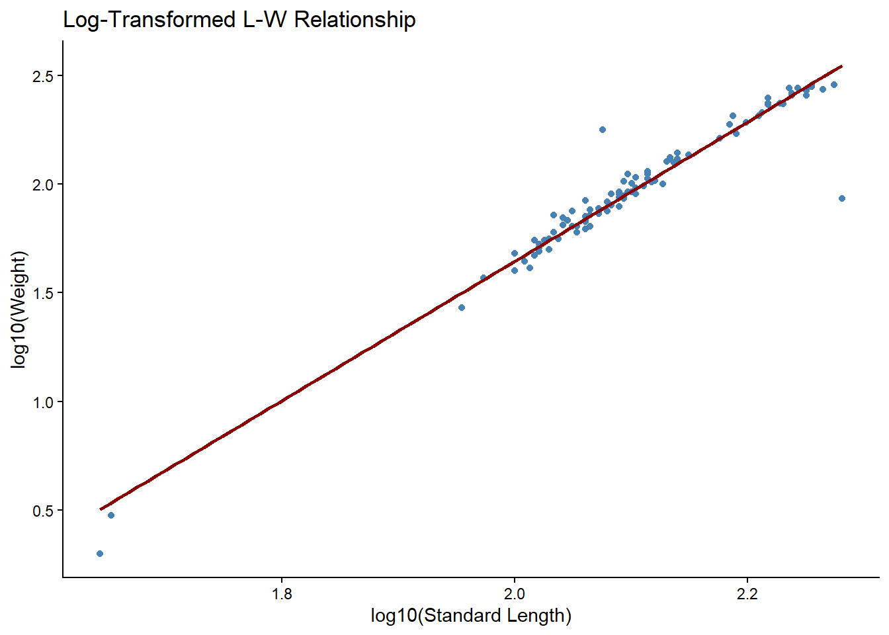
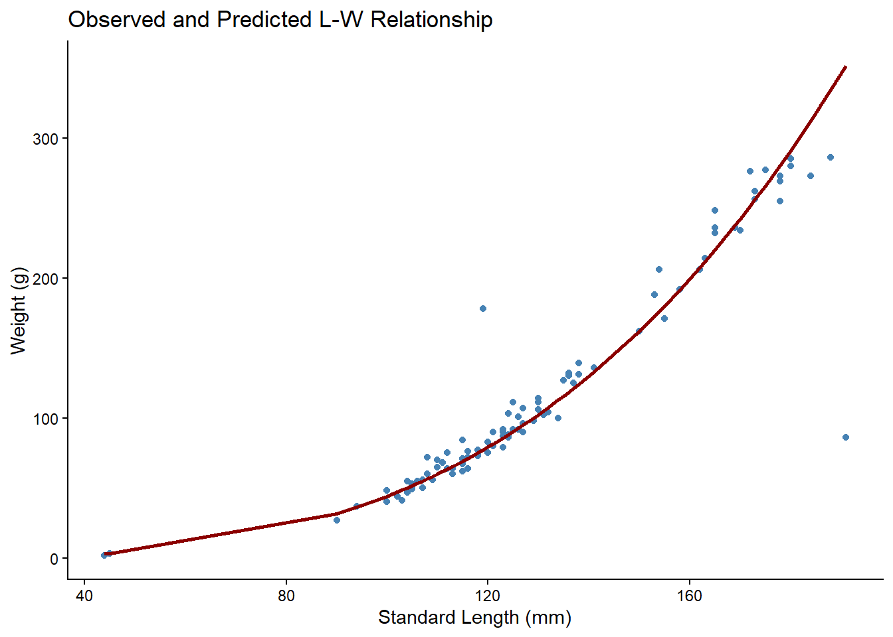
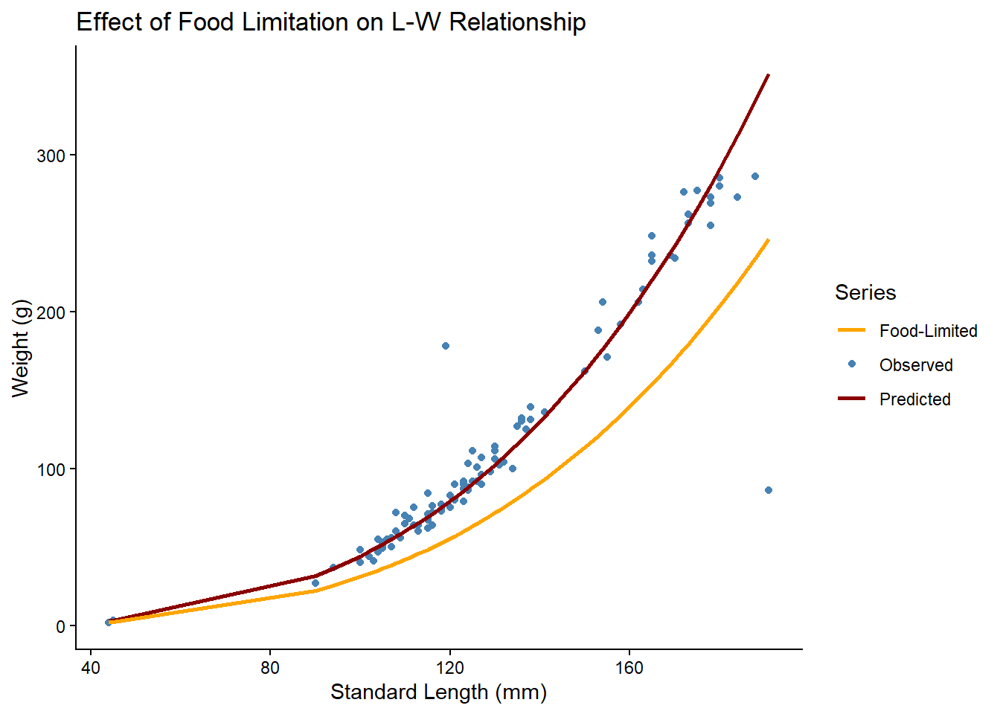

Exploring Fish Length-Weight Relationships
Submit a rendered qmd with all code, outputs, and answers to questions. Preferably in word (format: docx). It must incldue all code and outputs, and answers to questions.
Objective
The goal of this assignment is to understand, analyze, and interpret Length-Weight (L-W) data in fishes, exploring the biological significance of parameters in L-W relationships, how to fit models to data, and the effects of population differences.
1. Comparing Different L-W Relationships
Fish L-W relationship is often described by the equation:
\[ W = a L^b \]
where: - W = Weight - L = Length - a = intercept (scaling constant) - b = slope (shape/curvature)
Below are three curves for different values of b (simulated data):
Question 1 (2 pts):
- What does it mean biologically when
b = 3? - How does
b < 3andb > 3alter the weight-growth pattern? - In what situations might you expect a fish population to have
b < 3orb > 3?
- What species or life stages might show different
bvalues, and why?
2. Fitting the L-W Model to Data from FSAdata
We’ll use the FSAdata package for real fish data (install and load if needed):
We will work with bluegill data from the FSAdata package, which includes multiple lengths (mm) and weight (g) measurements.
data(BluegillLM) # Length (mm), Weight (g)
ggplot(BluegillLM, aes(x=sl, y=wght)) +
geom_point(color="steelblue") +
labs(title="Bluegill Length-Weight Data", x="Standard Length (mm)", y="Weight (g)")+
theme_classic()
Transforming for Linear Model
The L-W relationship is non-linear, but can be linearized by log-transforming:
\[ \log(W) = \log(a) + b \log(L) \]
Fit linear model:
mod <- lm(log10(wght) ~ log10(sl), data=BluegillLM)
summary(mod)
Call:
lm(formula = log10(wght) ~ log10(sl), data = BluegillLM)
Residuals:
Min 1Q Median 3Q Max
-0.61156 -0.01728 0.00226 0.03044 0.36306
Coefficients:
Estimate Std. Error t value Pr(>|t|)
(Intercept) -4.76596 0.16990 -28.05 <2e-16 ***
log10(sl) 3.20558 0.08075 39.70 <2e-16 ***
---
Signif. codes: 0 '***' 0.001 '**' 0.01 '*' 0.05 '.' 0.1 ' ' 1
Residual standard error: 0.08293 on 98 degrees of freedom
Multiple R-squared: 0.9415, Adjusted R-squared: 0.9409
F-statistic: 1576 on 1 and 98 DF, p-value: < 2.2e-16Plot the linear relationship:
ggplot(BluegillLM, aes(x=log10(sl), y=log10(wght))) +
geom_point(color="steelblue") +
geom_smooth(method="lm", color="darkred", se=FALSE) +
labs(title="Log-Transformed L-W Relationship", x="log10(Standard Length)", y="log10(Weight)")+
theme_classic()`geom_smooth()` using formula = 'y ~ x'
Interpretation: - The intercept = log(a); slope = b. - To get a, exponentiate the intercept: a = 10^intercept - Back-transform to plot actual L-W curve:
a <- 10^coef(mod)[1]
b <- coef(mod)[2]
BluegillLM$predicted_wght <- a * BluegillLM$sl^b
ggplot(BluegillLM, aes(x=sl, y=wght)) +
geom_point(color="steelblue") +
geom_line(aes(y=predicted_wght), color="darkred", size=1) +
labs(title="Observed and Predicted L-W Relationship", x="Standard Length (mm)", y="Weight (g)")+
theme_classic()Warning: Using `size` aesthetic for lines was deprecated in ggplot2 3.4.0.
ℹ Please use `linewidth` instead.
Question 2 (2 pts)
- Look at your plots, there are two outliers. Do you believe those datapoints are real or an issue with data taking? If they are real, what are some biological explanations for those?
- What are the estimated values of
aandb?
- Is the relationship isometric (
b ≈ 3), or allometric (b ≠ 3)? - What biological factors could affect these parameters?
3. Effect of Food Limitation (Simulated Population)
The following code will simulate a population of the same species (Bluegill), but affected by food limitation (lower weight at length):
a_foodlim <- a * 0.7 # reduce intercept (lower weight)
b_foodlim <- b # keep slope similar or even slightly lower
BluegillLM$wght_foodlim <- a_foodlim * BluegillLM$sl^b_foodlim
# map color to labels inside aes() so ggplot creates a legend
ggplot() +
geom_point(data = BluegillLM, aes(x = sl, y = wght, color = "Observed")) +
geom_line(data = BluegillLM, aes(x = sl, y = predicted_wght, color = "Predicted"), size = 1) +
geom_line(data = BluegillLM, aes(x = sl, y = wght_foodlim, color = "Food-Limited"), size = 1) +
scale_color_manual(name = "Series",
values = c("Observed" = "steelblue",
"Predicted" = "darkred",
"Food-Limited" = "orange")) +
labs(title = "Effect of Food Limitation on L-W Relationship",
x = "Standard Length (mm)",
y = "Weight (g)")+
theme_classic()
Question 3 (2 pts):
- How does food limitation affect the L-W relationship?
- What do changes in estimated
aandbmean biologically? - How would you recognize food limitation in field data?
4. Synthesis and Interpretation
Question 4 (4 pts):
- Why is it important to analyze L-W relationships in fisheries biology?
- What ecological or management questions can you answer using L-W models?
- How would you use L-W relationships to monitor fish populations over time?
- What potential errors or sources of variation should you watch for in L-W data collection and analysis?
Submission
Include answers to all questions, code outputs, and plots.
References: - FSAdata package documentation: https://cran.r-project.org/web/packages/FSAdata/